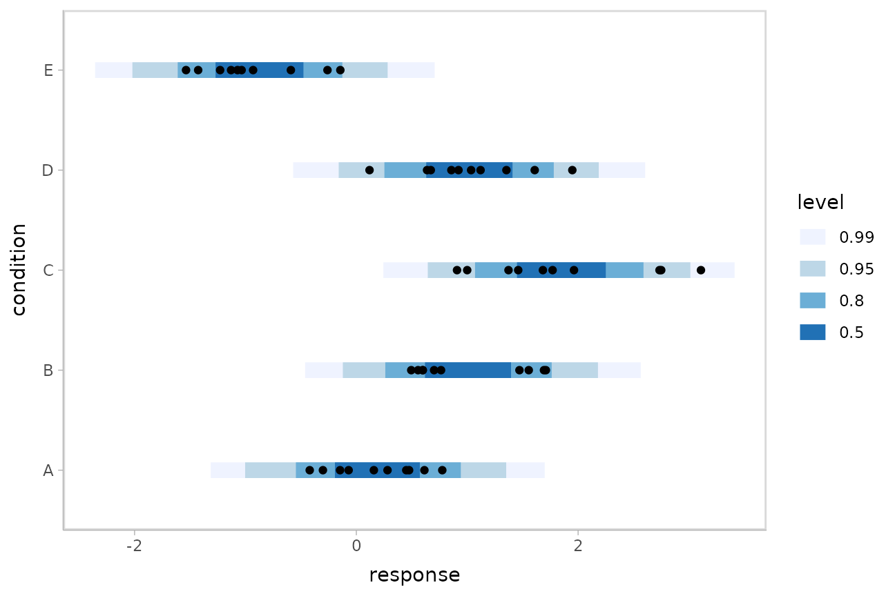

Using tidybayes with the posterior package
Matthew Kay
2024-09-14
Source:vignettes/tidy-posterior.Rmd
tidy-posterior.RmdIntroduction
This vignette describes how to use the tidybayes and
ggdist packages along with the posterior
package (and particularly the posterior::rvar() datatype)
to extract and visualize tidy data frames of
rvars from posterior distributions of model variables,
fits, and predictions.
This workflow is a “long-data-frame-of-rvars” workflow,
which is bit different from the “long-data-frame-of-draws” workflow
described in vignette("tidybayes") or
vignette("tidy-brms"). The rvar based approach
may be particularly useful on larger models, as it is more memory
efficient.
Setup
The following libraries are required to run this vignette:
library(dplyr)
library(purrr)
library(modelr)
library(ggdist)
library(tidybayes)
library(ggplot2)
library(cowplot)
library(rstan)
library(brms)
library(ggrepel)
library(RColorBrewer)
library(posterior)
library(distributional)
theme_set(theme_tidybayes() + panel_border())These options help Stan run faster:
rstan_options(auto_write = TRUE)
options(mc.cores = parallel::detectCores())Example dataset
To demonstrate tidybayes, we will use a simple dataset
with 10 observations from 5 conditions each:
set.seed(5)
n = 10
n_condition = 5
ABC =
tibble(
condition = rep(c("A","B","C","D","E"), n),
response = rnorm(n * 5, c(0,1,2,1,-1), 0.5)
)A snapshot of the data looks like this:
head(ABC, 10)## # A tibble: 10 × 2
## condition response
## <chr> <dbl>
## 1 A -0.420
## 2 B 1.69
## 3 C 1.37
## 4 D 1.04
## 5 E -0.144
## 6 A -0.301
## 7 B 0.764
## 8 C 1.68
## 9 D 0.857
## 10 E -0.931This is a typical tidy format data frame: one observation per row. Graphically:
ABC %>%
ggplot(aes(y = condition, x = response)) +
geom_point()
Model
Let’s fit a hierarchical model with shrinkage towards a global mean:
m = brm(
response ~ (1|condition),
data = ABC,
prior = c(
prior(normal(0, 1), class = Intercept),
prior(student_t(3, 0, 1), class = sd),
prior(student_t(3, 0, 1), class = sigma)
),
control = list(adapt_delta = .99),
file = "models/tidy-brms_m.rds" # cache model (can be removed)
)The format returned by tidybayes::tidy_draws() is
compatible with the posterior::draws_df() format, so
posterior::summarise_draws() supports it. Thus, we can use
posterior::summarise_draws() to get a quick look at draws
from the model:
## # A tibble: 15 × 10
## variable mean median sd mad q5 q95 rhat ess_bulk ess_tail
## <chr> <dbl> <dbl> <dbl> <dbl> <dbl> <dbl> <dbl> <dbl> <dbl>
## 1 b_Intercept 0.504 0.526 0.478 4.56e-1 -0.310 1.26 1.00 904. 1204.
## 2 sd_condition__Inter… 1.17 1.09 0.428 3.57e-1 0.651 1.94 1.00 944. 1542.
## 3 sigma 0.561 0.557 0.0602 5.89e-2 0.470 0.668 1.00 2057. 2243.
## 4 r_condition[A,Inter… -0.312 -0.336 0.498 4.80e-1 -1.08 0.526 1.00 972. 1267.
## 5 r_condition[B,Inter… 0.493 0.480 0.500 4.74e-1 -0.301 1.34 1.00 983. 1326.
## 6 r_condition[C,Inter… 1.33 1.32 0.501 4.78e-1 0.557 2.19 1.00 994. 1489.
## 7 r_condition[D,Inter… 0.512 0.498 0.502 4.77e-1 -0.277 1.36 1.00 1013. 1396.
## 8 r_condition[E,Inter… -1.39 -1.40 0.500 4.68e-1 -2.17 -0.535 1.00 990. 1392.
## 9 lp__ -51.9 -51.6 2.41 2.33e+0 -56.3 -48.7 1.00 977. 1634.
## 10 accept_stat__ 0.988 0.995 0.0211 6.66e-3 0.952 1.00 1.05 59.5 192.
## 11 stepsize__ 0.0544 0.0549 0.0119 1.62e-2 0.0393 0.0684 Inf 4.03 NA
## 12 treedepth__ 5.31 5 1.01 1.48e+0 4 7 1.07 40.9 NA
## 13 n_leapfrog__ 65.9 63 42.8 4.74e+1 15 127 1.07 41.6 1530.
## 14 divergent__ 0 0 0 0 0 0 NA NA NA
## 15 energy__ 55.9 55.6 3.14 3.03e+0 51.6 61.7 1.00 1040. 1772.Extracting draws from a fit in tidy-format using
spread_rvars
Now that we have our results, the fun begins: getting the variables
out in a tidy format! First, we’ll use the get_variables()
function to get a list of raw model variable names so that we know what
variables we can extract from the model:
## [1] "b_Intercept" "sd_condition__Intercept" "sigma"
## [4] "r_condition[A,Intercept]" "r_condition[B,Intercept]" "r_condition[C,Intercept]"
## [7] "r_condition[D,Intercept]" "r_condition[E,Intercept]" "lp__"
## [10] "accept_stat__" "stepsize__" "treedepth__"
## [13] "n_leapfrog__" "divergent__" "energy__"Here, b_Intercept is the global mean, and the
r_condition[] variables are offsets from that mean for each
condition. Given these variables:
r_condition[A,Intercept]r_condition[B,Intercept]r_condition[C,Intercept]r_condition[D,Intercept]r_condition[E,Intercept]
We might want a data frame where each row is a random variable
(rvar) representing all draws from
r_condition[A,Intercept],
r_condition[B,Intercept], ...[C,...],
...[D,...], or ...[E,...]. That would allow us
to easily compute quantities grouped by condition, or generate plots by
condition using ggplot, or even merge draws with the original data to
plot data and posteriors simultaneously.
We can do this using the spread_rvars() function. It
includes a simple specification format that we can use to extract
variables and their indices into tidy-format data frames. This function
is analogous to spread_draws() from the
tidy-data-frames-of-draws workflow described in
vignette("tidy-brms").
Gathering variable indices into a separate column in a tidy format data frame
Given a variable in the model like this:
r_condition[D,Intercept]
We can provide spread_rvars() with a column
specification like this:
r_condition[condition,term]
Where condition corresponds to D and
term corresponds to Intercept. There is
nothing too magical about what spread_rvars() does with
this specification: under the hood, it splits the variable indices by
commas and spaces (you can split by other characters by changing the
sep argument). It lets you assign columns to the resulting
indices in order. So r_condition[D,Intercept] has indices
D and Intercept, and
spread_rvars() lets us extract these indices as columns in
the resulting tidy data frame of draws from
r_condition:
m %>%
spread_rvars(r_condition[condition,term])## # A tibble: 5 × 3
## condition term r_condition
## <chr> <chr> <rvar[1d]>
## 1 A Intercept -0.31 ± 0.5
## 2 B Intercept 0.49 ± 0.5
## 3 C Intercept 1.33 ± 0.5
## 4 D Intercept 0.51 ± 0.5
## 5 E Intercept -1.39 ± 0.5The r_condition column above is a
posterior::rvar() datatype, which is an array-like datatype
representing draws from a random variable:
m %>%
spread_rvars(r_condition[condition,term]) %>%
pull(r_condition)## rvar<1000,4>[5] mean ± sd:
## [1] -0.31 ± 0.5 0.49 ± 0.5 1.33 ± 0.5 0.51 ± 0.5 -1.39 ± 0.5In this case, for each of the 5 elements of this rvar
vector, we have 1000 draws from each of 4 chains in the model. For more
on the rvar datatype, see
vignette("rvar", package = "posterior").
We can choose whatever names we want for the index columns; e.g.:
m %>%
spread_rvars(r_condition[c,t])## # A tibble: 5 × 3
## c t r_condition
## <chr> <chr> <rvar[1d]>
## 1 A Intercept -0.31 ± 0.5
## 2 B Intercept 0.49 ± 0.5
## 3 C Intercept 1.33 ± 0.5
## 4 D Intercept 0.51 ± 0.5
## 5 E Intercept -1.39 ± 0.5But the more descriptive and less cryptic names from the previous example are probably preferable.
If we leave off the name for an index, it is left “nested” in the
column. For example, we could nest the term since it only
has one value "Intercept" anyway:
m %>%
spread_rvars(r_condition[condition,])## # A tibble: 5 × 2
## condition r_condition[,1]
## <chr> <rvar[,1]>
## 1 A -0.31 ± 0.5
## 2 B 0.49 ± 0.5
## 3 C 1.33 ± 0.5
## 4 D 0.51 ± 0.5
## 5 E -1.39 ± 0.5Or we could nest the condition, though this is probably
not that useful practically:
m %>%
spread_rvars(r_condition[,term])## # A tibble: 1 × 2
## term r_condition[,1] [,2] [,3] [,4] [,5]
## <chr> <rvar[,1]> <rvar[,1]> <rvar[,1]> <rvar[,1]> <rvar[,1]>
## 1 Intercept -0.31 ± 0.5 0.49 ± 0.5 1.3 ± 0.5 0.51 ± 0.5 -1.4 ± 0.5Point summaries and intervals
With simple model variables
tidybayes provides a family of functions for generating
point summaries and intervals from draws in a tidy format. These
functions follow the naming scheme
[median|mean|mode]_[qi|hdi], for example,
median_qi(), mean_qi(),
mode_hdi(), and so on. The first name (before the
_) indicates the type of point summary, and the second name
indicates the type of interval. qi yields a quantile
interval (a.k.a. equi-tailed interval, central interval, or percentile
interval) and hdi yields a highest (posterior) density
interval. Custom point summary or interval functions can also be applied
using the point_interval() function.
For example, we might extract the draws corresponding to posterior distributions of the overall mean and standard deviation of observations:
m %>%
spread_rvars(b_Intercept, sigma)## # A tibble: 1 × 2
## b_Intercept sigma
## <rvar[1d]> <rvar[1d]>
## 1 0.5 ± 0.48 0.56 ± 0.06Like with r_condition[condition,term], this gives us a
tidy data frame. If we want the median and 95% quantile interval of the
variables, we can apply median_qi():
m %>%
spread_rvars(b_Intercept, sigma) %>%
median_qi(b_Intercept, sigma)## # A tibble: 1 × 9
## b_Intercept b_Intercept.lower b_Intercept.upper sigma sigma.lower sigma.upper .width .point
## <dbl> <dbl> <dbl> <dbl> <dbl> <dbl> <dbl> <chr>
## 1 0.526 -0.490 1.41 0.557 0.456 0.696 0.95 median
## # ℹ 1 more variable: .interval <chr>We can specify the columns we want to get medians and intervals from,
as above, or if we omit the list of columns, median_qi()
will use every column that is not a grouping column. Thus in the above
example, b_Intercept and sigma are redundant
arguments to median_qi() because they are also the only
columns we gathered from the model. So we can simplify this to:
m %>%
spread_rvars(b_Intercept, sigma) %>%
median_qi()## # A tibble: 1 × 9
## b_Intercept b_Intercept.lower b_Intercept.upper sigma sigma.lower sigma.upper .width .point
## <dbl> <dbl> <dbl> <dbl> <dbl> <dbl> <dbl> <chr>
## 1 0.526 -0.490 1.41 0.557 0.456 0.696 0.95 median
## # ℹ 1 more variable: .interval <chr>If you would rather have a long-format list, use
gather_rvars() instead:
m %>%
gather_rvars(b_Intercept, sigma)## # A tibble: 2 × 2
## .variable .value
## <chr> <rvar[1d]>
## 1 b_Intercept 0.50 ± 0.48
## 2 sigma 0.56 ± 0.06We could also use median_qi() here:
m %>%
gather_rvars(b_Intercept, sigma) %>%
median_qi(.value)## # A tibble: 2 × 7
## .variable .value .lower .upper .width .point .interval
## <chr> <dbl> <dbl> <dbl> <dbl> <chr> <chr>
## 1 b_Intercept 0.526 -0.490 1.41 0.95 median qi
## 2 sigma 0.557 0.456 0.696 0.95 median qiWith indexed model variables
When we have a model variable with one or more indices, such as
r_condition, we can apply median_qi() (or
other functions in the point_interval() family) as we did
before:
m %>%
spread_rvars(r_condition[condition,]) %>%
median_qi(r_condition)## # A tibble: 5 × 7
## condition r_condition .lower .upper .width .point .interval
## <chr> <dbl> <dbl> <dbl> <dbl> <chr> <chr>
## 1 A -0.336 -1.23 0.734 0.95 median qi
## 2 B 0.480 -0.441 1.54 0.95 median qi
## 3 C 1.32 0.406 2.38 0.95 median qi
## 4 D 0.498 -0.443 1.55 0.95 median qi
## 5 E -1.40 -2.36 -0.396 0.95 median qiNote for existing users of
spread_draws(): you may notice that
spread_rvars() requires us to be a bit more explicit in
passing column names to median_qi(). This is because
spread_rvars() does not return pre-grouped data frames,
unlike spread_draws() — since every row would always be its
own group in the output from spread_rvars(), returning a
pre-grouped data frame would be redundant.
You can also use posterior::summarise_draws() on an
rvar column to generate summaries with convergence
diagnostics. That function returns a data frame, which can be passed
directly into the dplyr::mutate() function:
m %>%
spread_rvars(r_condition[condition,]) %>%
mutate(summarise_draws(r_condition))## # A tibble: 5 × 12
## condition r_condition[,1] variable mean median sd mad q5 q95 rhat ess_bulk ess_tail
## <chr> <rvar[,1]> <chr> <dbl> <dbl> <dbl> <dbl> <dbl> <dbl> <dbl> <dbl> <dbl>
## 1 A -0.31 ± 0.5 r_condi… -0.312 -0.336 0.498 0.480 -1.08 0.526 1.00 972. 1267.
## 2 B 0.49 ± 0.5 r_condi… 0.493 0.480 0.500 0.474 -0.301 1.34 1.00 983. 1326.
## 3 C 1.33 ± 0.5 r_condi… 1.33 1.32 0.501 0.478 0.557 2.19 1.00 994. 1489.
## 4 D 0.51 ± 0.5 r_condi… 0.512 0.498 0.502 0.477 -0.277 1.36 1.00 1013. 1396.
## 5 E -1.39 ± 0.5 r_condi… -1.39 -1.40 0.500 0.468 -2.17 -0.535 1.00 990. 1392.Combining variables with different indices in a single tidy format data frame
spread_rvars() and gather_rvars() support
extracting variables that have different indices into the same data
frame. Indices with the same name are automatically matched up, and
values are duplicated as necessary to produce one row for every
combination of levels of all indices. For example, we might want to
calculate the mean within each condition (call this
condition_mean). In this model, that mean is the intercept
(b_Intercept) plus the effect for a given condition
(r_condition).
We can gather draws from b_Intercept and
r_condition together in a single data frame:
m %>%
spread_rvars(b_Intercept, r_condition[condition,])## # A tibble: 5 × 3
## b_Intercept condition r_condition[,1]
## <rvar[1d]> <chr> <rvar[,1]>
## 1 0.5 ± 0.48 A -0.31 ± 0.5
## 2 0.5 ± 0.48 B 0.49 ± 0.5
## 3 0.5 ± 0.48 C 1.33 ± 0.5
## 4 0.5 ± 0.48 D 0.51 ± 0.5
## 5 0.5 ± 0.48 E -1.39 ± 0.5Within each draw, b_Intercept is repeated as necessary
to correspond to every index of r_condition. Thus, the
mutate function from dplyr can be used to find their sum,
condition_mean (which is the mean for each condition):
m %>%
spread_rvars(`b_Intercept`, r_condition[condition,Intercept]) %>%
mutate(condition_mean = b_Intercept + r_condition)## # A tibble: 5 × 5
## b_Intercept condition Intercept r_condition condition_mean
## <rvar[1d]> <chr> <chr> <rvar[1d]> <rvar[1d]>
## 1 0.5 ± 0.48 A Intercept -0.31 ± 0.5 0.19 ± 0.18
## 2 0.5 ± 0.48 B Intercept 0.49 ± 0.5 1.00 ± 0.18
## 3 0.5 ± 0.48 C Intercept 1.33 ± 0.5 1.84 ± 0.17
## 4 0.5 ± 0.48 D Intercept 0.51 ± 0.5 1.02 ± 0.18
## 5 0.5 ± 0.48 E Intercept -1.39 ± 0.5 -0.88 ± 0.18Plotting point summaries and intervals
Plotting point summaries and intervals is straightforward using
ggdist::stat_pointinterval(), which will produce
visualizations with 66% and 95% intervals by default (this can be
changed using the .width parameter, the default is
.width = c(.66, .95)):
m %>%
spread_rvars(b_Intercept, r_condition[condition,]) %>%
mutate(condition_mean = b_Intercept + r_condition) %>%
ggplot(aes(y = condition, xdist = condition_mean)) +
stat_pointinterval()
median_qi() and its sister functions can also produce an
arbitrary number of probability intervals by setting the
.width = argument:
m %>%
spread_rvars(b_Intercept, r_condition[condition,]) %>%
median_qi(condition_mean = b_Intercept + r_condition, .width = c(.95, .8, .5))## # A tibble: 15 × 9
## b_Intercept condition r_condition[,1] condition_mean .lower .upper .width .point .interval
## <rvar[1d]> <chr> <rvar[,1]> <dbl> <dbl> <dbl> <dbl> <chr> <chr>
## 1 0.5 ± 0.48 A -0.31 ± 0.5 0.190 -0.146 0.536 0.95 median qi
## 2 0.5 ± 0.48 B 0.49 ± 0.5 0.998 0.640 1.33 0.95 median qi
## 3 0.5 ± 0.48 C 1.33 ± 0.5 1.84 1.49 2.18 0.95 median qi
## 4 0.5 ± 0.48 D 0.51 ± 0.5 1.02 0.670 1.36 0.95 median qi
## 5 0.5 ± 0.48 E -1.39 ± 0.5 -0.884 -1.24 -0.528 0.95 median qi
## 6 0.5 ± 0.48 A -0.31 ± 0.5 0.190 -0.0340 0.421 0.8 median qi
## 7 0.5 ± 0.48 B 0.49 ± 0.5 0.998 0.766 1.22 0.8 median qi
## 8 0.5 ± 0.48 C 1.33 ± 0.5 1.84 1.61 2.06 0.8 median qi
## 9 0.5 ± 0.48 D 0.51 ± 0.5 1.02 0.786 1.24 0.8 median qi
## 10 0.5 ± 0.48 E -1.39 ± 0.5 -0.884 -1.11 -0.656 0.8 median qi
## 11 0.5 ± 0.48 A -0.31 ± 0.5 0.190 0.0778 0.307 0.5 median qi
## 12 0.5 ± 0.48 B 0.49 ± 0.5 0.998 0.881 1.11 0.5 median qi
## 13 0.5 ± 0.48 C 1.33 ± 0.5 1.84 1.72 1.95 0.5 median qi
## 14 0.5 ± 0.48 D 0.51 ± 0.5 1.02 0.898 1.13 0.5 median qi
## 15 0.5 ± 0.48 E -1.39 ± 0.5 -0.884 -1.01 -0.767 0.5 median qiThe results are in a tidy format: one row per group and uncertainty
interval width (.width). This facilitates plotting, and is
essentially what ggdist::stat_pointinterval() is doing for
you under the hood above. For example, assigning -.width to
the linewidth aesthetic will show all intervals, making
thicker lines correspond to smaller intervals.
Intervals with densities
To see the density along with the intervals, we can use
ggdist::stat_eye() (“eye plots”, which combine intervals
with violin plots), or ggdist::stat_halfeye() (interval +
density plots):
m %>%
spread_rvars(b_Intercept, r_condition[condition,]) %>%
mutate(condition_mean = b_Intercept + r_condition) %>%
ggplot(aes(y = condition, xdist = condition_mean)) +
stat_halfeye()Or say you want to annotate portions of the densities in color; the
fill aesthetic can vary within a slab in all geoms and
stats in the ggdist::geom_slabinterval() family, including
ggdist::stat_halfeye(). For example, if you want to
annotate a domain-specific region of practical equivalence (ROPE), you
could do something like this:
m %>%
spread_rvars(b_Intercept, r_condition[condition,]) %>%
mutate(condition_mean = b_Intercept + r_condition) %>%
ggplot(aes(y = condition, xdist = condition_mean, fill = after_stat(abs(x) < .8))) +
stat_halfeye() +
geom_vline(xintercept = c(-.8, .8), linetype = "dashed") +
scale_fill_manual(values = c("gray80", "skyblue"))
Other visualizations of distributions:
stat_slabinterval
There are a variety of additional stats for visualizing distributions
in the ggdist::stat_slabinterval() family of stats and
geoms:

See vignette("slabinterval", package = "ggdist") for an
overview. All geoms that start with stat_... support the
use of rvar columns in the xdist and
ydist aesthetics.
Posterior means
Rather than calculating conditional means manually as in the previous
example, we could use add_epred_draws(), which is analogous
to brms::posterior_epred(), giving posterior draws from
posterior distributions of the mean of the response (i.e. the
distribution of the expected value of the posterior predictive). We can
combine it with modelr::data_grid() to first generate a
grid describing the fits we want, then populate that grid with
rvars representing draws from the posterior:
ABC %>%
data_grid(condition) %>%
add_epred_rvars(m)## # A tibble: 5 × 2
## condition .epred
## <chr> <rvar[1d]>
## 1 A 0.19 ± 0.18
## 2 B 1.00 ± 0.18
## 3 C 1.84 ± 0.17
## 4 D 1.02 ± 0.18
## 5 E -0.88 ± 0.18Quantile dotplots
Intervals are nice if the alpha level happens to line up with whatever decision you are trying to make, but getting a shape of the posterior is better (hence eye plots, above). On the other hand, making inferences from density plots is imprecise (estimating the area of one shape as a proportion of another is a hard perceptual task). Reasoning about probability in frequency formats is easier, motivating quantile dotplots (Kay et al. 2016, Fernandes et al. 2018), which also allow precise estimation of arbitrary intervals (down to the dot resolution of the plot, 100 in the example below).
Within the slabinterval family of geoms in tidybayes is the
dots and dotsinterval family, which
automatically determine appropriate bin sizes for dotplots and can
calculate quantiles from samples to construct quantile dotplots.
ggdist::stat_dots() and
ggdist::stat_dotsinterval() are the variants designed for
use on rvars:
ABC %>%
data_grid(condition) %>%
add_epred_rvars(m) %>%
ggplot(aes(xdist = .epred, y = condition)) +
stat_dotsinterval(quantiles = 100)
The idea is to get away from thinking about the posterior as indicating one canonical point or interval, but instead to represent it as (say) 100 approximately equally likely points.
Posterior predictions
Where add_epred_rvars() is analogous to
brms::posterior_epred(), add_predicted_rvars()
is analogous to brms::posterior_predict(), giving draws
from the posterior predictive distribution.
We could use ggdist::stat_interval() to plot predictive
bands alongside the data:
ABC %>%
data_grid(condition) %>%
add_predicted_rvars(m) %>%
ggplot(aes(y = condition)) +
stat_interval(aes(xdist = .prediction), .width = c(.50, .80, .95, .99)) +
geom_point(aes(x = response), data = ABC) +
scale_color_brewer()
The add_XXX_rvars() functions can be chained together to
add posterior predictions (predicted_rvars) and the
distribution of the mean of the posterior predictive
(epred_rvars) to the same data frame. This makes it easy to
plot both together alongside the data:
ABC %>%
data_grid(condition) %>%
add_epred_rvars(m) %>%
add_predicted_rvars(m) %>%
ggplot(aes(y = condition)) +
stat_interval(aes(xdist = .prediction)) +
stat_pointinterval(aes(xdist = .epred), position = position_nudge(y = -0.3)) +
geom_point(aes(x = response), data = ABC) +
scale_color_brewer()
Posterior predictions, Kruschke-style
The above approach to posterior predictions integrates over the parameter uncertainty to give a single posterior predictive distribution. Another approach, often used by John Kruschke in his book Doing Bayesian Data Analysis, is to attempt to show both the predictive uncertainty and the parameter uncertainty simultaneously by showing several possible predictive distributions implied by the posterior.
We can do this pretty easily by asking for the distributional
parameters for a given prediction implied by the posterior. We’ll do it
explicitly here by setting dpar = c("mu", "sigma") in
add_epred_draws(). Rather than specifying the parameters
explicitly, you can also just set dpar = TRUE to get draws
from all distributional parameters in a model, and this will work for
any response distribution supported by brms::brm():
ABC %>%
data_grid(condition) %>%
add_epred_rvars(m, dpar = c("mu", "sigma"))## # A tibble: 5 × 4
## condition .epred mu sigma
## <chr> <rvar[1d]> <rvar[1d]> <rvar[1d]>
## 1 A 0.19 ± 0.18 0.19 ± 0.18 0.56 ± 0.06
## 2 B 1.00 ± 0.18 1.00 ± 0.18 0.56 ± 0.06
## 3 C 1.84 ± 0.17 1.84 ± 0.17 0.56 ± 0.06
## 4 D 1.02 ± 0.18 1.02 ± 0.18 0.56 ± 0.06
## 5 E -0.88 ± 0.18 -0.88 ± 0.18 0.56 ± 0.06At this point, we will need to use the “long-data-frame-of-draws”
format more typical of the standard tidybayes workflow. What we want to
do is select a small number of draws from the joint distribution of
mu and sigma to plot predictive densities
from. We will use unnest_rvars() to “unnest” all the
rvars in the above output into a long-format data frame,
sample 30 of the draws using sample_draws(), and then use
ggdist::stat_slab() to visualize each predictive
distribution implied by the values of mu and
sigma:
ABC %>%
data_grid(condition) %>%
add_epred_rvars(m, dpar = c("mu", "sigma")) %>%
unnest_rvars() %>%
sample_draws(30) %>%
ggplot(aes(y = condition)) +
stat_slab(
aes(xdist = dist_normal(mu, sigma)),
color = "gray65", alpha = 1/10, fill = NA
) +
geom_point(aes(x = response), data = ABC, shape = 21, fill = "#9ECAE1", size = 2)
The use of unnest_rvars() after
add_epred_rvars() is essentially equivalent to just using
the _draws() instead of _rvars() form of the
prediction functions (e.g. add_epred_draws()), which may be
faster and/or more convenient depending on what other data manipulation
you need to do.
Fit/prediction curves
To demonstrate drawing fit curves with uncertainty, let’s fit a
slightly naive model to part of the mtcars dataset:
m_mpg = brm(
mpg ~ hp * cyl,
data = mtcars,
file = "models/tidy-brms_m_mpg.rds" # cache model (can be removed)
)We can draw fit curves (i.e., curves showing the uncertainty in the conditional expectation, aka the expectation of the posterior predictive) with probability bands:
mtcars %>%
group_by(cyl) %>%
data_grid(hp = seq_range(hp, n = 51)) %>%
add_epred_rvars(m_mpg) %>%
ggplot(aes(x = hp, color = ordered(cyl))) +
stat_lineribbon(aes(ydist = .epred)) +
geom_point(aes(y = mpg), data = mtcars) +
scale_fill_brewer(palette = "Greys") +
scale_color_brewer(palette = "Set2")
Or we could plot posterior predictions (instead of means). For this
example we’ll also use alpha to make it easier to see
overlapping bands:
mtcars %>%
group_by(cyl) %>%
data_grid(hp = seq_range(hp, n = 101)) %>%
add_predicted_rvars(m_mpg) %>%
ggplot(aes(x = hp, color = ordered(cyl), fill = ordered(cyl))) +
stat_lineribbon(aes(ydist = .prediction), .width = c(.95, .80, .50), alpha = 1/4) +
geom_point(aes(y = mpg), data = mtcars) +
scale_fill_brewer(palette = "Set2") +
scale_color_brewer(palette = "Dark2")
See vignette("tidy-brms") for additional examples of fit
lines, including animated hypothetical
outcome plots (HOPs).
Extracting distributional regression parameters
brms::brm() also allows us to set up submodels for
parameters of the response distribution other than the location
(e.g., mean). For example, we can allow a variance parameter, such as
the standard deviation, to also be some function of the predictors.
This approach can be helpful in cases of non-constant variance (also called heteroskedasticity by folks who like obfuscation via Latin). E.g., imagine two groups, each with different mean response and variance:
set.seed(1234)
AB = tibble(
group = rep(c("a", "b"), each = 20),
response = rnorm(40, mean = rep(c(1, 5), each = 20), sd = rep(c(1, 3), each = 20))
)
AB %>%
ggplot(aes(x = response, y = group)) +
geom_point()Here is a model that lets the mean and standard deviation of
response be dependent on group:
m_ab = brm(
bf(
response ~ group,
sigma ~ group
),
data = AB,
file = "models/tidy-brms_m_ab.rds" # cache model (can be removed)
)We can plot the posterior distribution of the mean
response alongside posterior predictive intervals and the
data:
AB %>%
data_grid(group) %>%
add_epred_rvars(m_ab) %>%
add_predicted_rvars(m_ab) %>%
ggplot(aes(y = group)) +
stat_halfeye(aes(xdist = .epred), scale = 0.6, position = position_nudge(y = 0.175)) +
stat_interval(aes(xdist = .prediction)) +
geom_point(aes(x = response), data = AB) +
scale_color_brewer()
This shows posteriors of the mean of each group (black intervals and the density plots) and posterior predictive intervals (blue).
The predictive intervals in group b are larger than in
group a because the model fits a different standard
deviation for each group. We can see how the corresponding
distributional parameter, sigma, changes by extracting it
using the dpar argument to
add_epred_rvars():
AB %>%
data_grid(group) %>%
add_epred_rvars(m_ab, dpar = TRUE) %>%
ggplot(aes(xdist = sigma, y = group)) +
stat_halfeye() +
geom_vline(xintercept = 0, linetype = "dashed")
By setting dpar = TRUE, all distributional parameters
are added as additional columns in the result of
add_epred_rvars(); if you only want a specific parameter,
you can specify it (or a list of just the parameters you want). In the
above model, dpar = TRUE is equivalent to
dpar = list("mu", "sigma").
Comparing levels of a factor
If we wish compare the means from each condition,
compare_levels() facilitates comparisons of the value of
some variable across levels of a factor. By default it computes all
pairwise differences.
Let’s demonstrate compare_levels() with
ggdist::stat_halfeye(). We’ll also re-order by the mean of
the difference:
m %>%
spread_rvars(r_condition[condition,]) %>%
compare_levels(r_condition, by = condition) %>%
ungroup() %>%
mutate(condition = reorder(condition, r_condition)) %>%
ggplot(aes(y = condition, xdist = r_condition)) +
stat_halfeye() +
geom_vline(xintercept = 0, linetype = "dashed") 
Ordinal models
The brms::posterior_epred() function for ordinal and
multinomial regression models in brms returns multidimensional variables
for each draw, where an additional dimension to the result contains
outcome categories. The philosophy of tidybayes is to tidy
whatever format is output by a model, so in keeping with that
philosophy, when applied to ordinal and multinomial brms
models, add_epred_draws() outputs a nested
.epred variable that has additional columns for each level
of the response variable.
Ordinal model with continuous predictor
We’ll fit a model using the mtcars dataset that predicts
the number of cylinders in a car given the car’s mileage (in miles per
gallon). While this is a little backwards causality-wise (presumably the
number of cylinders causes the mileage, if anything), that does not mean
this is not a fine prediction task (I could probably tell someone who
knows something about cars the MPG of a car and they could do reasonably
well at guessing the number of cylinders in the engine).
Before we fit the model, let’s clean the dataset by making the
cyl column an ordered factor (by default it is just a
number):
## mpg cyl disp hp drat wt qsec vs am gear carb
## Mazda RX4 21.0 6 160 110 3.90 2.620 16.46 0 1 4 4
## Mazda RX4 Wag 21.0 6 160 110 3.90 2.875 17.02 0 1 4 4
## Datsun 710 22.8 4 108 93 3.85 2.320 18.61 1 1 4 1
## Hornet 4 Drive 21.4 6 258 110 3.08 3.215 19.44 1 0 3 1
## Hornet Sportabout 18.7 8 360 175 3.15 3.440 17.02 0 0 3 2
## Valiant 18.1 6 225 105 2.76 3.460 20.22 1 0 3 1Then we’ll fit an ordinal regression model:
m_cyl = brm(
cyl ~ mpg,
data = mtcars_clean,
family = cumulative,
seed = 58393,
file = "models/tidy-brms_m_cyl.rds" # cache model (can be removed)
)add_epred_rvars() will now return a matrix instead of a
vector for the .epred column, where the nested columns of
.epred are the probability that the response is in that
category. For example, here is the fit for two values of
mpg in the dataset:
tibble(mpg = c(21,22)) %>%
add_epred_rvars(m_cyl)## # A tibble: 2 × 2
## mpg .epred[,"4"] [,"6"] [,"8"]
## <dbl> <rvar[,1]> <rvar[,1]> <rvar[,1]>
## 1 21 0.36 ± 0.16 0.61 ± 0.16 0.027 ± 0.035
## 2 22 0.72 ± 0.16 0.27 ± 0.16 0.008 ± 0.015This format can be useful in some cases, but for our immediate
purposes it would be better to have the prediction for each category be
on a separate row. We can use the columns_to parameter of
add_epred_rvars() to move the nested column headers into
values of a column (here "cyl"). This will also add a
.row column indexing which row of the input data frame each
prediction came from:
tibble(mpg = c(21,22)) %>%
add_epred_rvars(m_cyl, columns_to = "cyl")## # A tibble: 6 × 4
## mpg .row cyl .epred
## <dbl> <int> <chr> <rvar[1d]>
## 1 21 1 4 0.360 ± 0.162
## 2 22 2 4 0.722 ± 0.164
## 3 21 1 6 0.613 ± 0.164
## 4 22 2 6 0.270 ± 0.159
## 5 21 1 8 0.027 ± 0.035
## 6 22 2 8 0.008 ± 0.015Note: for the cyl variable to retain its original factor
level names you must be using brms greater than or equal to
version 2.15.9.
We could plot fit lines for fitted probabilities against the dataset:
data_plot = mtcars_clean %>%
ggplot(aes(x = mpg, y = cyl, color = cyl)) +
geom_point() +
scale_color_brewer(palette = "Dark2", name = "cyl")
fit_plot = mtcars_clean %>%
data_grid(mpg = seq_range(mpg, n = 101)) %>%
add_epred_rvars(m_cyl, value = "P(cyl | mpg)", columns_to = "cyl") %>%
ggplot(aes(x = mpg, color = cyl)) +
stat_lineribbon(aes(ydist = `P(cyl | mpg)`, fill = cyl), alpha = 1/5) +
scale_color_brewer(palette = "Dark2") +
scale_fill_brewer(palette = "Dark2") +
labs(y = "P(cyl | mpg)")
plot_grid(ncol = 1, align = "v",
data_plot,
fit_plot
)
While talking about the mean for an ordinal distribution often does not make sense, in this particular case one could argue that the expected number of cylinders for a car given its miles per gallon is a meaningful quantity. We could plot the posterior distribution for the average number of cylinders for a car given a particular miles per gallon as follows:
Given the matrix form of the output of add_epred_rvars()
(i.e. when we do not use columns_to), this quantity is just
the dot product of P(cyl|mpg) with c(4,6,8).
Since the rvar format supports math operations, including
matrix multiplication (as the %**% operator), we can
transform the prediction column into an expectation easily. Here is an
example on two rows:
tibble(mpg = c(21,22)) %>%
# note we are *not* using `columns_to` anymore
add_epred_rvars(m_cyl, value = "P(cyl | mpg)") %>%
mutate(cyl = `P(cyl | mpg)` %**% c(4,6,8))## # A tibble: 2 × 3
## mpg `P(cyl | mpg)`[,"4"] [,"6"] [,"8"] cyl[,1]
## <dbl> <rvar[,1]> <rvar[,1]> <rvar[,1]> <rvar[,1]>
## 1 21 0.36 ± 0.16 0.61 ± 0.16 0.027 ± 0.035 5.3 ± 0.34
## 2 22 0.72 ± 0.16 0.27 ± 0.16 0.008 ± 0.015 4.6 ± 0.34Altogether, followed by unnest_rvars() so we can create
spaghetti plots:
label_data_function = . %>%
ungroup() %>%
filter(mpg == quantile(mpg, .47)) %>%
summarise_if(is.numeric, mean)
data_plot_with_mean = mtcars_clean %>%
data_grid(mpg = seq_range(mpg, n = 101)) %>%
# NOTE: use of ndraws = 100 here subsets draws for the creation of spaghetti plots;
# DOT NOT do this if you are making other chart types like intervals or densities
add_epred_rvars(m_cyl, value = "P(cyl | mpg)", ndraws = 100) %>%
# calculate expected cylinder value
mutate(cyl = drop(`P(cyl | mpg)` %**% c(4,6,8))) %>%
# transform in long-data-frame-of-draws format for making spaghetti plots
unnest_rvars() %>%
ggplot(aes(x = mpg, y = cyl)) +
geom_line(aes(group = .draw), alpha = 5/100) +
geom_point(aes(y = as.numeric(as.character(cyl)), fill = cyl), data = mtcars_clean, shape = 21, size = 2) +
geom_text(aes(x = mpg + 4), label = "E[cyl | mpg]", data = label_data_function, hjust = 0) +
geom_segment(aes(yend = cyl, xend = mpg + 3.9), data = label_data_function) +
scale_fill_brewer(palette = "Set2", name = "cyl")
plot_grid(ncol = 1, align = "v",
data_plot_with_mean,
fit_plot
)
Now let’s add on a plot of the latent linear predictor against the
thresholds used to determine the probabilities for each category. We can
use posterior::as_draws_rvars() to get parameters from the
model as rvar objects:
draws_cyl = m_cyl %>%
tidy_draws() %>%
as_draws_rvars()
draws_cyl## # A draws_rvars: 1000 iterations, 4 chains, and 10 variables
## $b_Intercept: rvar<1000,4>[2] mean ± sd:
## [1] -38 ± 12 -33 ± 11
##
## $b_mpg: rvar<1000,4>[1] mean ± sd:
## [1] -1.8 ± 0.57
##
## $disc: rvar<1000,4>[1] mean ± sd:
## [1] 1 ± 0
##
## $lp__: rvar<1000,4>[1] mean ± sd:
## [1] -13 ± 1.3
##
## $accept_stat__: rvar<1000,4>[1] mean ± sd:
## [1] 0.94 ± 0.081
##
## $stepsize__: rvar<1000,4>[1] mean ± sd:
## [1] 0.31 ± 0.043
##
## $treedepth__: rvar<1000,4>[1] mean ± sd:
## [1] 2.7 ± 0.66
##
## $n_leapfrog__: rvar<1000,4>[1] mean ± sd:
## [1] 9.1 ± 5.1
##
## # ... with 2 more variablesWe’re really interested in the b_Intercept parameter,
which represents thresholds on the latent linear predictor:
beta = draws_cyl$b_Intercept
beta## rvar<1000,4>[2] mean ± sd:
## [1] -38 ± 12 -33 ± 11We’re also going to want the positions where the linear predictor
intercepts those thresholds, which we can calculate using the thresholds
and the slope (b_mpg):
x_intercept = with(draws_cyl, b_Intercept / b_mpg)
x_intercept## rvar<1000,4>[2] mean ± sd:
## [1] 21 ± 0.50 18 ± 0.52We can use add_linpred_rvars() analogously to
add_epred_rvars() to get the latent linear predictor. We’ll
combine this with the thresholds in beta, subtracting
beta[1] from the linear predictor and from the other
threshold, beta[2], as these values are all highly
correlated (thus are hard to visualize with uncertainty in a meaningful
way without looking at their differences). We’ll also demonstrate the
use of .width = ppoints(XXX) with
stat_lineribbon() where XXX is a number like
30 or 50, which combined with a low
alpha value produces gradient-like lineribbons:
beta_2_color = brewer.pal(n = 3, name = "Dark2")[[3]]
beta_1_color = brewer.pal(n = 3, name = "Dark2")[[1]]
# vertical lines we will use to show the relationship between the linear
# predictor and P(cyl | mpg)
x_intercept_lines = geom_vline(
# this works because `rvar`s define median() to take the median of the
# distribution of each element, see vignette("rvar", package = "posterior")
xintercept = median(x_intercept),
color = "gray50",
alpha = 0.2,
linewidth = 1
)
thresholds_plot = mtcars_clean %>%
data_grid(mpg = seq_range(mpg, n = 101)) %>%
add_linpred_rvars(m_cyl) %>%
ggplot(aes(x = mpg)) +
stat_lineribbon(
aes(ydist = beta[2] - beta[1]),
color = beta_2_color, fill = beta_2_color,
alpha = 1/30, .width = ppoints(30),
linewidth = 1, linetype = "21"
) +
geom_line(aes(y = 0), linewidth = 1, color = beta_1_color, linetype = "21") +
stat_lineribbon(
aes(ydist = .linpred - beta[1]),
fill = "black", color = "black",
alpha = 1/30, .width = ppoints(30)
) +
labs(y = expression("linear predictor" - beta[1])) +
annotate("label",
label = "beta[1]", parse = TRUE,
x = max(mtcars_clean$mpg), y = 0, hjust = 0.8,
color = beta_1_color
) +
annotate("label",
label = "beta[2] - beta[1]", parse = TRUE,
x = max(mtcars_clean$mpg), y = median(beta[2] - beta[1]), hjust = 0.9,
color = beta_2_color
) +
coord_cartesian(ylim = c(-10, 10))
plot_grid(ncol = 1, align = "v", axis = "lr",
data_plot_with_mean + x_intercept_lines,
fit_plot + x_intercept_lines,
thresholds_plot + x_intercept_lines
)Note how when the linear predictor intersects the line for
beta[1] categories 1 and 2 are equally likely, and when it
intersects the line for beta[2] categories 2 and 3 are
equally likely.
For more examples with this model using the long-data-frame-of-draws
workflow (which can be easier for certain tasks), see the corresponding
section of vignette("tidy-brms").